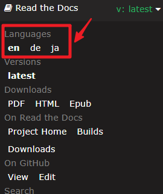

注釈
こんにちは、SunFounderのRaspberry Pi & Arduino & ESP32愛好家コミュニティへようこそ！Facebook上でRaspberry Pi、Arduino、ESP32についてもっと深く掘り下げ、他の愛好家と交流しましょう。
参加する理由は？
エキスパートサポート：コミュニティやチームの助けを借りて、販売後の問題や技術的な課題を解決します。
学び＆共有：ヒントやチュートリアルを交換してスキルを向上させましょう。
独占的なプレビュー：新製品の発表や先行プレビューに早期アクセスしましょう。
特別割引：最新製品の独占割引をお楽しみください。
祭りのプロモーションとギフト：ギフトや祝日のプロモーションに参加しましょう。
👉 私たちと一緒に探索し、創造する準備はできていますか？[ここ]をクリックして今すぐ参加しましょう！
SunFounder Ultimate Sensor Kit
SunFounder Ultimate Sensor Kit をお選びいただき、ありがとうございます。
注釈
このドキュメントは以下の言語で利用可能です。
ご希望の言語でドキュメントにアクセスするために、それぞれのリンクをクリックしてください。

ベーシックなガイドしか付いていないオンライン学習キットにがっかりしたことはありませんか？電子機器の世界に飛び込みたいと夢見ているが、その複雑さに圧倒されていませんか？
エンスージアストたちが披露する素晴らしい電子プロジェクトを見て、どうやって始めたのか疑問に思ったことはありますか？
ご紹介します：Arduino Uno R4 Minima搭載の究極のセンサーキット。あなたの創造的な挑戦に応える一体型のパッケージです。
革命的なArduino R4によって駆動されるこのキットは、オープンソース愛好者にとって新しい時代を象徴します。強力な32ビットプロセッサ、豊富なメモリなど、新旧のプロジェクトにスムーズに統合するように設計されています。
超音波センサー、炎センサー、加速度計＆ジャイロスコープ、さらには脈酸素計と心拍数センサーなど、30種類以上の先進的なモジュールが付属しています。それぞれのコンポーネントは、初心者に優しいコード例とペアリングされています。これにより、ツールだけでなく初期のノウハウも手に入れることができます。
ESP8266 WiFiモジュールを介してArduinoをBlynkなどのプラットフォームにリンクさせる、IoTに特化したプロジェクトで深く探究しましょう。炎警報システム、侵入警報システム、さらにはBluetooth制御の環境モニターなど、革新的なプロジェクトを設計してみてください。
だがそれだけではありません。多くの魅力的なプロジェクトに没頭しましょう！スマートなゴミ箱を作る、自動石鹸ディスペンサーを開発する、あるいは動きに反応するリレーを設計するなど、キットはあなたの視野を広げ、具現化する力を与えます。
これは単なる手順を追うだけのことではありません。理解し、実験し、発明することです。単に模倣するのではなく、あなた自身の独自のプロジェクトを作り出します。
ただ観察者でいるのではなく、創造者になりませんか？究極のセンサーキットで電子機器の魅力的な世界への旅を始めましょう。冒険はここから始まります！
質問や他に面白いアイデアがあれば、service@sunfounder.com までメールをお送りください。
ディスプレイ言語について
注釈
英語以外にも、このコースで他の言語のサポートを進行中です。 ご協力いただける方は、service@sunfounder.comまでお問い合わせください。 お礼として無料の製品を提供させていただきます。
現在、オンラインチュートリアルは英語、ドイツ語、日本語に対応しています。 ページの左下の角にある Read the Docs アイコンをクリックして、表示言語を変更してください。

目次
- Ultimate Sensor Kitについて
- Arduinoで始めよう
- Arduinoビデオコース
- ビデオ1 - Arduino Uno R4 Minima
- ビデオ 2 - Arduino IDEの紹介
- ビデオ 3: 基本的な回路とブレッドボーディング
- ビデオ 4: 変数、データ型、定数
- ビデオ 5: デジタル入力と条件ロジック
- ビデオ 6: アナログからデジタルへの変換
- ビデオ 7: フォトレジスタの理解
- ビデオ 8: パルス幅変調 (PWM) によるRGBフルカラーLEDの制御
- ビデオ 9: ユーザー定義関数とシリアル入力 | ポテンショメーターでRGB LEDを制御
- ビデオ 10: 配列と圧電ブザー | 音楽トーンの再生
- ビデオ 11: サーボモーター | フォトレジスタを使用した単軸ソーラートラッカー
- ビデオ 12: millis関数 丨 複数タスクの処理 丨 非ブロッキングコード
- ビデオ 13: ハードウェア割り込み | ボタンのデバウンス
- ビデオ 14: I2C 16x2 LCD ディスプレイ 丨 DHT11 - 湿度と温度センサー 丨 熱指数
- ビデオ 15: SSD1306 OLED ディスプレイ | テキスト、グラフィック、およびアニメーション
- コードのダウンロード
- コンポーネントの基本
- Arduino UNO R4 Minima ボード
- ブレッドボード
- ジャンパーワイヤー
- 超音波センサーモジュール（HC-SR04）
- ガス/煙センサーモジュール（MQ2）
- 炎センサーモジュール
- 振動センサーモジュール（SW-420）
- 加速度センサー & ジャイロスコープモジュール（MPU6050）
- ボタンモジュール
- フォトレジスタモジュール
- ポテンショメータモジュール
- IR 赤外線障害物回避センサーモジュール
- 容量性土壌湿度モジュール
- 雨滴検出モジュール
- 温度と湿度センサーモジュール（DHT11）
- PIRモーションモジュール（HC-SR501）
- 温度、湿度、気圧センサー（BMP280）
- 脈拍酸素計および心拍数センサー（MAX30102）
- リアルタイムクロックモジュール（DS1302）
- タッチセンサモジュール
- 赤外線速度センサモジュール（LM393）
- ジョイスティックモジュール
- 飛行時間（ToF）マイクロLiDAR距離センサ（VL53L0X）
- I2C LCD 1602
- OLEDディスプレイモジュール
- 信号機モジュール
- RGB モジュール
- 5V リレーモジュール
- パッシブブザーモジュール
- サーボモータ（SG90）
- 遠心ポンプ
- TTモーター
- ESP8266モジュール
- JDY-31 Bluetooth モジュール
- IoT プロジェクト
- 楽しいプロジェクト
- FAQ
- ありがとうございます
著作権通知
このマニュアルに含まれるテキスト、画像、コード等のすべての内容はSunFounder社が所有しています。関連する規制と著作権法に従い、著者と関連する権利者の法的権利を侵害しない範囲で、個人的な学習、調査、楽しみ、またはその他の非営利目的または非営利団体による目的でのみ使用してください。許可なく商業的利益を追求する個人または組織に対しては、当社は法的手段を講じる権利を留保します。